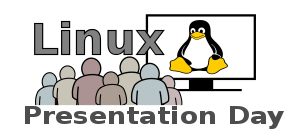

Der Online - Linux Presentation Day
Der Online - Linux Presentation Day (OLPD) befindet sich momentan noch in der Planungphase. Falls du Interesse hast zu helfen, melde dich bei mir.
Wieter Infos zum Linux Presentation Day selbst findest du hier.
Was ist der Online-LPD?
Der Online-LPD soll wie eine "normale" LPD-Veranstaltung, Interessierten die Möglichkeit geben
mehr über GNU/Linux zu erfahren und damit in Kontakt zu kommen.
Nur beim Online-LPD soll dies eben Online stattfinden.
Wen wir suchen?
Wir suchen zu aller erst technisch versierte und engagierte Leute, um erst einmal die Grenzen auszuloten, um dann gezielter nach Leuten zu suchen.
Solltest du dich also mit einem der folgenden Dinge auskennen und Interesse haben, uns zu helfen, dann melde dich bei mir.
- Virtualisierung mit und unter GNU/Linux
- Erfahrung mit Container-Technologie, wie LXC oder Docker
- Streaming (Audio/Video) unter GNU/Linux
- Webentwicklung - HTML5/Jade, Javascript/Coffeescript & CSS/Stylus/Compass
- Programmierung - Python, Go oder Java
- Viel Erfahrung mit murmur (Mumble Server)
- Erfahrung mit "großen" Online-Events
- ~5 Jahre Erfahrung als GNU/Linux Administrator
- Kreativkopf mit Ideen
Wir freuen uns schon auf dich!